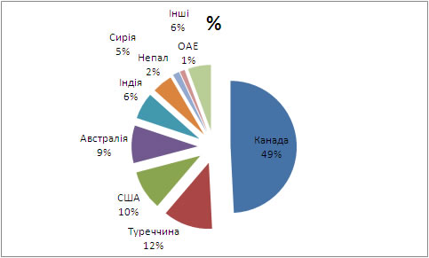
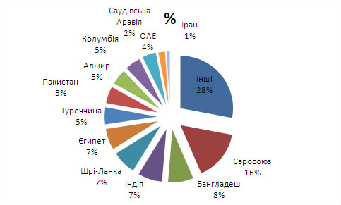

| По об’єму виробництва сочевиця займає четверте місце серед холодостійких зернобобових, на англійській ця група культур має назву pulses. Виробництво її в світі за останні 10 років коливалося від 3,3 млн. т. до 4,55 млн. т. в 2010 р. Найбільше її вирощують у таких країнах як: Канада, Індія, Туреччина, Бангладеш, Австралія, Непал, США, Китай, Сирія, Іран (табл.1). Серед цих країн Канада, Австралія вирощують сочевицю практично лише для експорту. Приблизно 75 % валового виробництва становить червона сочевиця, 20 % зелена, 5% коричнева та інші типи. Головними виробниками зеленої сочевиці є США та Канада, тоді як остання частина світу вирощує головним чином червону сочевицю (на Україні традиційно більш поширена зелена сочевиця, і всі сорти цієї культури внесені до державного реєстру відносяться до цього типу). 75% червоної сочевиці і 45% зеленої, а в середньому 70 % вирощеної сочевиці споживається в регіонах вирощування. |
Таблиця 1. Виробництво сочевиці країнами світу, т., в 2004-2010 рр.
| Країни |
2004р |
2005р |
2006р |
2007р |
2008р |
2009р |
2010р |
Середнє |
| Канада |
915800 |
1164300 |
692800 |
733900 |
1043200 |
1510200 |
1947100 |
1143900 |
| Індія |
1037800 |
994200 |
946200 |
910000 |
810000 |
950000 |
900000 |
935457 |
| Туреччина |
540000 |
570000 |
622284 |
515181 |
131188 |
302181 |
447400 |
446891 |
| США |
186692 |
238000 |
147145 |
165561 |
108545 |
265760 |
392670 |
214910 |
| Непал |
158651 |
160716 |
157963 |
164694 |
161147 |
147725 |
151757 |
157522 |
| Китай |
144000 |
135000 |
126000 |
134000 |
150000 |
120000 |
125000 |
133429 |
| Сирія |
125300 |
153665 |
180720 |
109033 |
34100 |
102461 |
77300 |
111797 |
| Австралія |
52300 |
210000 |
36000 |
131000 |
64234 |
143000 |
140000 |
110933 |
| Іран |
110760 |
113225 |
100784 |
104717 |
56099 |
83985 |
79174 |
92678 |
| Марокко |
32550 |
14960 |
34230 |
8500 |
9380 |
23210 |
28420 |
21607 |
| Інші |
303035 |
288805 |
294078 |
322910 |
258822 |
283286 |
296618 |
292508 |
| Всього |
3606888 |
4042871 |
3338204 |
3299496 |
2826715 |
3931808 |
4585439 |
3661632 |
Джерело: FAO
Світова продаж за останні десять років коливалась від 1,01 млн. т. в 2002 р. до 1,36 млн. т. в 2001 р. Список країн експортерів, причому із значним відривом, очолюють чотири країни: Канада, Туреччина, США, Австралія - майже 81 % світового експорту (рис. 1). Канада експортує 75 % вирощеної сочевиці, тоді як інші країни експортують незначну частку від свого валового виробництва. Хотілося б відмітити, що до другої світової війни список експортерів очолював Радянський союз. В таблиці 2 наведена інформація що до основних країн експортеріа сочевиці по роках. Близько 60 % експорту складає червона сочевиця, 35 % зелена, 5 % коричнева та інші типи. |
 |
Рис.1. Країни експортери сочевиці і їх внесок в світовий ринок, %
(середнє за 2002-2010 рр., FAO). |
Таблиця 2. Основні країни експортери сочевиці в розрізі років, т., в 2004-2010 рр.
| Країни |
2002 р. |
2003 р. |
2004 р. |
2005 р. |
2006 р. |
2007 р. |
2008 р. |
2009 р. |
Середнє |
| Канада |
351096 |
370876 |
373549 |
576878 |
683022 |
921394 |
852876 |
1240800 |
671311 |
| Туреччина |
119151 |
216918 |
171185 |
118421 |
301329 |
186271 |
70340 |
130069 |
164211 |
| США |
103138 |
97198 |
87551 |
162520 |
130732 |
122774 |
168646 |
184077 |
132080 |
| Австралія |
242049 |
84595 |
150314 |
108341 |
173036 |
101611 |
76026 |
67116 |
125386 |
| Індія |
86395 |
83053 |
136922 |
281276 |
121010 |
51 |
110 |
602 |
88677 |
| Сирія |
10647 |
69728 |
71038 |
60600 |
79427 |
243165 |
3337 |
3337 |
67660 |
| Непал |
27785 |
30449 |
15252 |
14591 |
7778 |
4109 |
16417 |
56768 |
21644 |
| ОАЕ |
10677 |
5467 |
36684 |
3551 |
4655 |
8599 |
36612 |
24643 |
16361 |
| Інші |
67985 |
82885 |
85171 |
77411 |
52359 |
61529 |
95550 |
91735 |
76828 |
| ВСЬОГО |
1018923 |
1041169 |
1127666 |
1403589 |
1553348 |
1649503 |
1319914 |
1799147 |
1364157 |
Джерело: FAO
| Список країн імпортерів є більш широким і рівномірним. В десятку найбільших тут входять: Шрі-Ланка, Єгипет, Туреччина, Індія, Іспанія, Алжир, Колумбія, Пакистан, Франція і Перу (рис. 3). |
 |
| Рис.2. Країни імпортери сочевиці і їх долі , %
(середнє за 2002-2010 рр., FAO). |
Найбільшим покупцем сочевиці є Євросоюз, в більшості крупно насінна зелена сочевиця, а також специфічні для Іспанії коричнева (Pardina lentil) та французька у Франції. Індія будучи другою за чисельністю населення країною є найбільшим споживачем сочевиці в світі. Проте кількість сочевиці, яку вона закупляє в великій мірі залежить від домашнього урожаю тому в окремі роки імпорт може бути порівняно малим, крім того це дуже чутливий до ціни ринок, тут чим дешевше тим краще. Туреччина є також одним з найбільших виробників сочевиці, в основному червоної, значна кількість її споживається на внутрішньому ринку, частина реекспортується. Об’єднані арабські емірати більшу частину закупленою сочевиці переробляють і продають в сусідні країни. Серед інших важливих країн споживачів сочевиці є також Бангладеш, Шрі-Ланка, Єгипет, і Пакистан. |
Таблиця 2. Основні країни імпортери сочевиці в розрізі років, т., в 2004-2010 рр.
| Країни імпортери |
2002 р. |
2003 р. |
2004 р. |
2005 р. |
2006 р. |
2007 р. |
2008 р. |
2009 р. |
Середнє |
| Євросоюз |
195760 |
195024 |
192234 |
215538 |
220854 |
209223 |
204722 |
187541 |
202612 |
| Бангладеш |
63329 |
122785 |
109819 |
84508 |
73402 |
138471 |
38960 |
177673 |
101118 |
| Індія |
66981 |
37949 |
26569 |
36114 |
58935 |
230557 |
33210 |
288077 |
97299 |
| Шрі-Ланка |
106539 |
90932 |
92621 |
86389 |
76207 |
102505 |
102270 |
107983 |
95681 |
| Єгипет |
100287 |
61177 |
88701 |
108257 |
76784 |
84463 |
66364 |
91475 |
84689 |
| Туреччина |
22668 |
16909 |
5557 |
64281 |
69071 |
30979 |
191683 |
141541 |
67836 |
| Пакистан |
67068 |
80769 |
35514 |
51156 |
80153 |
88610 |
70019 |
66510 |
67475 |
| Алжир |
62955 |
66500 |
38924 |
86183 |
55799 |
64349 |
67305 |
60555 |
62821 |
| Колумбія |
65255 |
52968 |
63368 |
66492 |
67471 |
68935 |
56061 |
57595 |
62268 |
| Об’єднані арабські емірати |
41382 |
17846 |
10084 |
17186 |
81693 |
64540 |
82537 |
125233 |
55063 |
| Іспанія |
47460 |
47023 |
41248 |
54372 |
57742 |
48197 |
48175 |
42162 |
48297 |
| Франція |
31295 |
31787 |
26612 |
32659 |
31903 |
28594 |
31086 |
25368 |
29913 |
| Італія |
26837 |
30877 |
27323 |
27938 |
32006 |
28397 |
27132 |
29957 |
28808 |
| Саудівська Аравія |
21031 |
24110 |
32087 |
32766 |
35254 |
34103 |
29675 |
5404 |
26804 |
| Німеччина |
21079 |
21192 |
23530 |
20448 |
28245 |
23579 |
21891 |
18858 |
22353 |
| Великобританія |
16806 |
14740 |
18091 |
19997 |
19846 |
21026 |
20870 |
19550 |
18866 |
| Іран |
688 |
0 |
0 |
2058 |
16655 |
10220 |
38387 |
38387 |
13299 |
| Інші |
263429 |
351463 |
334886 |
465520 |
372184 |
411018 |
344955 |
364240 |
363462 |
| Всього в світі |
1077372 |
1118432 |
1030364 |
1316448 |
1284462 |
1537973 |
1326148 |
1712214 |
1300427 |
Ринок сочевиці подібно до ринків інших альтернативних культур піддається значним коливанням. На нього впливають як економічні чинники так і погодні умови в країнах експортерах і споживачах.
Нижче на графіку подана закупівельна ціна на сочевицю різних ринкових типів в Канаді. Так як Канада основний гравець на ринку сочевиці в світі, майже 50% експорту, і відповідно має найсильніший вплив на ціну. Як можна бачити з графіка, найбільшою ціна була в листопаді 2008 року. Причиною підвищення ціни на сочевицю в цьому році, було зменшення її виробництва - лише 2,7 млн. т., при середній потребі споживачів - 3,3-3,6 млн. т. Це сталося, зокрема, через зменшення площ під сочевицею і неврожай на неї в Туреччині, та неврожай на сочевицю в Австралії. (ці країни є головними виробниками червоної сочевиці на експорт). Відповідно, найбільшої була ціна в цьому році на червону сочевицю. Але, хоча нестача була лише червоної сочевиці, збільшення цін на червону сочевицю потягло за собою і збільшення ціни на інші види сочевиці. Суттєве збільшення закупівельної ціни сприяло зацікавленню фермерів багатьох країн цією культурою. Тому на протязі послідуючих років виробництво сочевиці суттєво зросло майже на 30 % і досягло максимуму - 4,76 млн. т. у 2010 р. Основне збільшення площ під сочевицею було в Канаді (табл. 1). суттєво збільшилися площі під сочевицею в таких країнах як Росія і Аргентина. Росія: 2010 р. – 5,4 тис. т., 2011 р. – 57,0 тис. т., 2012 р. – 68,0 тис. т.
Все це призвело до обвалу ціни на сочевицю у 2011-2012 рр. Починаючи з 2013 р. ціна на сочевицю стабілно зрозстає. на кінець 2015 початок 2016 р. вона досягла нового максимуму більше 1300 доларів/т зеленої крупної сочевиці. І це не зважаючи на те, що в Канаді цього року було зібрано один з найбільших урожаїв за останні роки. |
 |
Рис. 1. Динаміка закупівельних цін ($/центнер) на сочевицю різних ринкових типів, Саскатун Канада,
2002-2015 рр. (за даними http://www.agriculture.gov.sk.ca/markettrends).
Високі ціни на зернові та олійні культури, які склалися в даний час, та низька ціна на сочевицю тепер сприяє поступовому зменшенню площ під сочевицею. Так у Канаді в 2011 р. було вироблено 1,53 млн. т., у 2012 р. – 1,47 млн. т., у 2013 р. прогнозується 1,27 млн. т. Проте значні запаси насіння які зосталися від перевиробництва в попередні роки ще певний час триматимуть ціну на сочевицю на низькому рівні. Сприятиме збільшенню ціни на сочевицю неврожай в основних регіонах де її вирощують споживають: Канада, Туреччина та Індійський субконтинент.
Закупівельні ціни в світі на сочевицю знижуються і на перший погляд здається що не варто вирощувати дану культуру. Так вважають усі і тому площі під нею найближчі 2-3 роки зменшаться. І ціна знову почне підніматися. Але сьогодні як раз вигідний момент починати займатися цією культурою. Можна купити дешево насіння, налагодити технологію вирощування, збут. І коли через 2-3 роки ціна знову буде високою отримувати прибуток. Більшість же фермерів робить навпаки. Усі чекають поки ціна буде високою, потім усі шукають насіння створюючи ажіотаж, і цим самим ще підвищуючи ціну. Потім багато сіють. І мають невисоку реалізаційну ціну.
Назад до змісту |
|